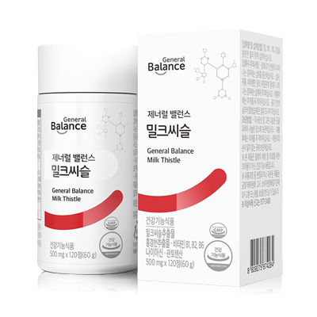

제너럴 밸런스 밀크씨슬
간 건강 피로 개선 7중 밀크씨슬 홍경천
- 회원가입 없이 회원가
- 지쿱 본사 정품 직접 발송
- 5만 원 이상 무료배송
제너럴 밸런스 밀크씨슬 상세 설명 · 원료와 특징
제너럴 밸런스 밀크씨슬 간 건강을 지키는 좋은 습관 피로에 지친 간을 위한 선택, 핵심 6가지 7중 복합 기능성 기존 제너럴 밸런스 밀크씨슬에 나이아신(100%) 기능성 원료 추가 간 건강 밀크씨슬 + 스트레스로 인한 피로 개선 홍경천 + 에너지 대사 비타민 B군 5종 지쿱만에 엄선된 부원료 20가지 첨가 제너럴 밸런스 밀크씨슬 크기 변경으로 섭취하기가 좀더 쉬워졌습니다
첨가물 無첨가 밀크씨슬 실리마린 130 mg 홍경천 로사빈 5 mg 비타민B군 5종 영양성분 기준치 100% 밀크씨슬 추출물 실리마린 130mg 간 건강에 도움을 줄 수 있음 홍경천 추출물 로사빈 5mg 스트레스로 인한 피로 개선에 도움을 줄 수 있음 비타민B1 탄수화물과 에너지 대사에 필요
비타민B2 체내 에너지 생성에 필요
비타민B6 단백질 및 아미노산 이용에 필요
혈액의 호모시스테인 수준을 정상으로 유지하는데 필요
판토텐산 지방, 탄수화물, 단백질 대사와 에너지 생성에 필요
나이아신 체내 에너지 생성에 필요
기존 밀크씨슬에 나이아신(100%) 기능성 원료 추가 “체내 에너지 생성 필요” 일일 섭취권장량 기준 전체 대사물질에 필요한 영양소로 생체 내 산화, 환원 반응에 관여하여 탄수화물, 지방, 스테로이드 합성 과정에 참여하여, 에너지대사, 에너지 생성과정에 중요한 역할을 합니다.
간 건강 밀크씨슬 + 홍경천 + 에너지 대사 비타민 B군 5종 간 건강의 핵심원료 ‘밀크씨슬추출물’ 추출물 당신의 ‘간’을 지켜드립니다.
핵심 ‘주원료’ 실리마린 130mg함유 밀크씨슬은 ‘엉겅퀴’ 라고도 불리는 국화과 식물로 간 건강에 도움을 줄 수 있는 실리마린 성분으로 알려져 있으며 2000년 이상의 역사 속에서 간 건강은 물론 일상 생활 곳곳에서 인류가 수 천년 동안 사용한 식물입니다. 16세기와 17세기 식물학자들이 간 보호에 밀크씨슬을 이용해 왔다는 기록이 있습니다.
실리마린 Silymarin 밀크씨슬 속 실리마린 성분은 간 건강에 도움을 줄 수 있습니다.
기능성 원료 밀크씨슬 추출물의 인체적용시험 결과 간세포 손상을 측정하는 지표인 ALT, AST 개선 확인 실리마린 섭취군 대조군 대상 : 간 기능이 저하된 사람 50명(섭취군 25명, 대조군 25명) 조건 : 8주 동안 실리마린 140 mg/일 섭취 ※ ALT(알라닌아미노전이효소), AST(아스파르테이트아미노전이효소) : 간에서 아미노산 대사에 관여하는 효소로서 간 세포가 손상되면 이 효소들이 혈액으로 빠져나와 혈중 ALT, AST 수치가 높게 나타납니다.
※ 시험 결과가 모든 사람에게 동일하게 적용되는 것은 아님 출처 : Hepatitis Monthly, Summer 2008; 8(3):191-195 스트레스로 인한 피로개선에 도움을 줄 수 있는 ‘홍경천추출물’ 홍경천은 본래 척박한 땅, 고산지대의 바위 틈에서 자생하는 생명력 강한 식물입니다. 홍경천에는 로사빈 성분이 풍부하게 함유되어 있는데, 식약처로부터 ‘스트레스로 인한 피로 개선’에 도움을 줄 수 있음을 인정받아 기능성 원료로 고시
되었습니다.
로사빈 Rosavin 홍경천 뿌리에 함유되어 있는 로사빈은 스트레스로 인한 피로개선에 도움을 줄 수 있습니다.
기능성원료 홍경천 추출물의 인체적용시험 결과 01 항피로지수 개선 확인 총 항피로지수 홍경천 저용량 섭취군 홍경천 고용량 섭취군 대조식품섭취군 무처리군 19~21세 남성 121명 6일 동안 370 mg(저용량), 555 mg(고용량)을 단회 섭취 ※ 항피로지수 : 피로에 저항하는 힘을 말합니다.
출처 : Phytomedicine 2003; 10:95-105 02 자각 스트레스에 의한 코르티솔(스트레스 호르몬) 지수 감소 확인 침샘의 코르티솔농도 홍경천 처리군 섭취 전 섭취 후 피로현상이 있는 20~55세 성인 60명 28일 동안 홍경천 추출물 576 mg/일 섭취 출처 : Planta Medica 2009; 75:105-112 03 야근으로 인한 피로 감소 확인 홍경천 추출물 섭취가 야근 시간 동안 피로에 미치는 영향을 알아 보기 위한 인체적용시험에서 홍경천 추출물을 먹은 그룹은 섭취 전 후 총 피로도 지표가차이를 나타냈습니다. 시험 결과, 홍경천 추출물은 일반적인 스트레스 하에서 피로를 감소시키는 것으로 나타났습니다.
출처 : (Phytomedicine, 7(5):365-371, 2000) Rhodiola rosea in stress induced fatigue-Adouble blind cross-over study of a standardized extract SHR-5 with a repeated low-doseregimen on the mental performance of healthy physicians during night duty
04 수험생의 정신적 피로도 감소 확인 스트레스로 인해 발생한 수험생의 피로에 홍경천추출물의 저용량 반복 섭취가 미치는 영향에 대해 알아본 인체적용시험에서는 홍경천추출물이 정신적 피로도를 감소시키는 것으로 나타났습니다.
출처 : (Phytomedicine, 7(2):85-89, 2000) A double-blind, placebo-controlled pilot study of the stimulating and adaptogenic effect of Rhodiola rosea SHR-5 extract on the fatigue of students caused by stress during an examination period with a repeated low-dose regimen
에너지 대사에 필요한 ‘비타민B군 5종’ 1일 영양성분 기준치 100% 충족!
비타민 B 엄선된 부원료 31가지 첨가 27종 과일 야채 혼합 농축 분말, 타우린, 옥수수단백추출물, 인삼발효추출분말 27종 과일 야채 혼합 농축 분말 석류 라임 블루베리 크랜베리 사과 녹차 적포도 오렌지 타트체리 빌베리 흑마늘 브로콜리 새싹귀리 당근 시금치 아래 이미지는 급원 식품입니다.
아미노 믹스 호장근 추출분말 인삼발효 제너럴 밸런스 밀크씨슬 크기 변경 으로 섭취하기가 좀더 쉬워졌습니다.
확 바뀌었습니다.
기존 1일 750mL 2정 리뉴얼 1일 500mL 2정 첨가물 無첨가 생산 효율이나 제품 안정화를 위해 사용되는 부형제(이산화규소, 스테아린산마그네슘) 향과 색을 내기 위한 첨가물(합성향료, 착색료) 을 사용하지 않고 만들었습니다.
이산화규소 스테아린산 마그네슘 (히드록시프로필 메틸셀룰로스) 착색료 합성향료 감미료 섭취량 섭취 방법 1일 2회, 1회 1정 섭취방법 스스로 정한 시간에 규칙적으로, 위가 좋지 않은 분은 식후 섭취 보관방법 서늘한 곳 브랜드 스토리 불규칙한 생활습관을 가진 현대인의 몸속 밸런스를 맞추어 주는 건강한 습관 제너럴 밸런스입니다.
스트레스, 영양불균형, 환경오염 등의 원인으로 흐트러진 현대인의 생활패턴으로부터 건강의 균형을 되찾고 기능성과 안전성이 모두 검증된 제품으로 국내뿐만 아니라 전 세계의 건강을 지향합니다.
이런 분들께 권해드립니다.
회식 및 야근 잦은 직장인 과중한 업무와 스트레스로 피곤하신 분 간 건강을 미리 관리 하고 싶으신 분 아침에 일어나기 어려우신 분 활력 있는 생활 을 원하시는 분 바쁜 생활로 건강관리를 못하시는 분 불규칙한 생활 하시는 분 타정(정제) 및 패키지 포인트 과일야채 혼합분말 (부원료) 정제에 미세하게 보이는 어두운색 반점은 이물질이 아닌 과일야채혼합분말, 인삼발효추출분말, 호장근추출분말등 부원료에 의한 것이므로 품질에 이상이 없으니 안심하고 섭취하시기 바랍니다.
※ 이산화규소, 스테아린산 마그네슘, HPMC를 넣지않아 쉽게 부서질 수 있습니다.
동봉된 스티커 를 필요한 내용을 적어 용기에 붙여 사용하세요.
건강 정보 제2의 심장, 간 혈류량 조절 영양소 저장 면역기관 독성해독 에너지 대사 호르몬 공급조절 화학공장(1,000가지 효소생산) 불필요한 물질 배설등 출처 : 대한간학회 간은 음식물에서 얻는 탄수화물, 단백질, 지방을 몸에 필요한 물질로 분해·합성·저장하는 동시에 몸 안의 독소를 제거하는 해독 기능을 담당하는 등 하는 일이 무려 500여가지가 넘어 ‘제2의 심장’이라고 불립니다.
침묵의 장기, 간 간은 많이 손상되기 전까지 아무 증상이 없어 ‘침묵의 장기’ 라고도 불립니다.
간 기능이 80%가량 떨어질 때까지 별다른 신호가 없어 이상 증상을 자각하고 병원에 내원했을 때는 이미 늦은 경우가 대부분이기 때문에 철저한 건강관리와 정기적인 건강검진이 필요합니다.
간 손상을 조기에 발견하기 어려운 이유 첫째, 간에 이상이 있어도 증상이 없는 경우가 많고 둘째, 증상이 있다 하더라도 피로, 식욕부진, 소화불량 등 간 이상만의 특이한 증상이 아닌 것으로 나타나며 셋째, 일반적으로 간질환으로 의심되는 증상은 간의 이상이 많이 진행되고 나서야 비로소 나타난다는 점입니다.
출처 : 보건복지부 대한의학회 간의 기능이 저하되는 원인 바이러스 음주 피로와 스트레스 영양불량 출처 : 식약처 건강기능식품 기능성 내용 - 간 건강 국가별 스트레스 수준 일상생활에서 스트레스를 받는 사람들의 비율(%) 한국 호주 캐나다/프랑스/영국 미국/독일 이탈리아 스페인 멕시코 출처 : 삼성경제연구소 ※ 본 정보는 제품정보와 관련 없는 건강정보입니다.
각종 인증 사항 비코프인증 획득!
비코프인증(B-Corp Certified) 이란?
B-Corp은 비즈니스를 통해 사회 환경적 문제를 해결하고 사회에 긍정적인 영향을 끼치는 기업을 확대하기 위해서 2007년 BLab (미국비영리 조직)이 만든 글로벌 사회적 기업 인증 제도입니다.
가족친화우수기업 인증 획득!
가족친화인증 가족친화제도를 모범적으로 운영하는 기업 및 공공기관에 대하여 심사를 통해 인증을 부여하는 제도입니다. 가족친화인증 기업은 근로자가 일에 집중하도록 하여 기업 생산성과 경쟁력 강화하고 출산율 제고, 고용 안정 등으로 국가경제 발전에 기여할 뿐 아니라 가족친화경영 확산을 통한 근로자와 가족 구성원의 삶의 질을 향상시키는 바른 기업 문화를 확산 시킵니다.
건강기능식품 건강기능식품은 건강을 유지하고 개선하는데 도움을 주는 식품으로 식품의약품안전처에서 기능성과 안전성을 평가해 인정한 제품입니다.
GMP (우수건강기능식품제조기준) GMP는 우수한 품질의 건강기능식품을 제조하기 위한 기준으로 작업장 구조와 설비를 비롯해 원료 구입부터 생산ㆍ포장ㆍ출하까지 전 공정에 걸친 체계적인 관리 기준입니다.
ISO9001 인증 획득!
ISO9001은 국제표준화기구(International Organization for Standardization)에서 제정·시행하고 있는 품질경영시스템에 관한 국제규격입니다.
지쿱 본사 제품 상세페이지 내용을 옮겨 정리했어요.
상품정보제공고시
| 품명 | 제너럴 밸런스 밀크씨슬 |
|---|---|
| 식품의 유형 | 건강기능식품 |
| 제조 및 유통전문판매원 | 제너럴바이오㈜ / 전북 남원시 송동면 용투산로 254 |
| 제조연월일, 유통기한 또는 소비기한(품질 유지기한) | 제품에 별도 표기 |
| 포장단위별 용량(중량), 수량 | 500mg x 120정(60g) / 1일 2회, 1회1정 |
| 원재료명 및 함량(농수산물의 원산지 표시에 관한 법률에 따른 원산지 표기 포함) | 밀크씨슬추출물분말(미국산), 홍경천추출물(스페인산), 니코틴산아미드, 판토텐산칼슘, 비타민B6염산염, 비타민B2, 비타민B1염산염, 옥수수전분{옥수수 : 외국산(러시아, 헝가리, 세르비아 등)}, 목화씨유분말, 치커리뿌리추출물분말, 대나무수액추출분말, 타우린, 27종과일야채혼합농축분말, 아미노믹스, L-글루타치온효모추출물, 호장근추출분말, 인삼발효추출분말, 글리세린, 카나우바왁스 |
| 영양정보 | 1일 섭취량 : 2정(1,000mg) 1일 섭취량 당 함량 : 열량4Kcal, 탄수화물1 g 미만(0%),,단백질0 g(0%),지방0 g(0%),나트륨0 mg(0%),실리마린130 mg ,로사빈5 mg,비타민B1 1.2 mg(100%),비타민B2 1.4 mg(100%),비타민B6 1.5 mg(100%),나이아신 15 mg NE(100%),판토텐산 5 mg(100%) ※ ( )의 수치는 1일 영양성분기준치에 대한 비율 |
| 기능정보 | [밀크씨슬추출물] 간 건강에 도움을 줄 수 있음 [홍경천추출물] 스트레스로 인한 피로 개선에 도움을 줄 수 있음 [비타민B1] 탄수화물과 에너지 대사에 필요 [비타민B2] 체내 에너지 생성에 필요 [비타민B6] 단백질 및 아미노산 이용에 필요, 혈액의 호모시스테인 수준을 정상으로 유지하는데 필요 [나이아신] 체내 에너지 생성에 필요 [판토텐산] 지방, 탄수화물, 단백질 대사와 에너지 생성에 필요 |
| 섭취량 및 섭취방법 | 1일 2회 , 1회 1정을 물과 함께 섭취하십시오. |
| 섭취 시 주의사항 및 부작용 가능성 | 어린이, 임산부 및 수유부는 섭취를 피하십시오. 알레르기 반응이 나타나는 경우에는 섭취를 중단하십시오. 설사, 위통, 복부팽만 등의 위장관계 장애가 나타나는 경우에는 섭취에 주의하십시오. 이상사례 발생 시 섭취를 중단하고 전문가와 상담하십시오. 손발 따끔거림, 작열감 또는 저림 등의 이상사례 발생 시 섭취를 중단하고 전문가와 상담하십시오. |
| 질병의 예방 및 치료를 위한 의약품이 아니라는 내용의 표현 | ※ 본 제품은 질병의 예방 및 치료를 위한 의약품이 아닌 건강기능식품입니다. |
| \'유전자변형건강기능식품\'에 해당하는 경우의 표시 | 해당없음 |
| 표시광고 사전심의필 | 표시·광고사전심의필 |
| 수입식품에 해당하는 경우 "건강기능식품에 관한 법률에 따른 수입신고를 필함"의 문구 | 해당없음 |
| 소비자 상담 문의 | 카카오톡으로 문의 주시면 지쿱 본사로 접수해 드립니다. |
건강식품 다른 제품
배송·교환·반품
지쿱 본사에서 직접 발송해요. 50,000원 이상 주문 시 무료배송, 50,000원 미만은 배송비 2,500원이에요. A/S·교환·반품은 카카오톡으로 문의 주시면 지쿱 본사로 접수해 드려요.